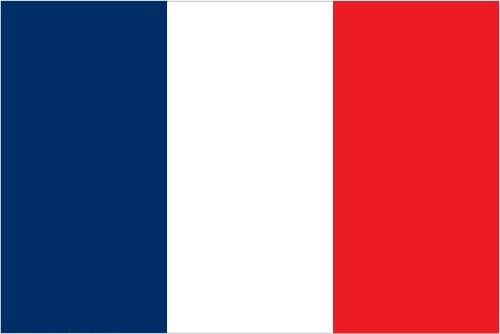

High-income, advanced and diversified EU economy and Euro user; strong tourism, aircraft manufacturing, pharmaceuticals, and industrial sectors; ongoing pension reform protests; high public debts and COVID-19 spending increases; global environmental leader.
Content
Introduction
France today is one of the most modern countries in the world and is a leader among European nations. It plays an influential global role as a permanent member of the United Nations Security Council, NATO, the G-7, the G-20, the EU, and other multilateral organizations.
France rejoined NATO's integrated military command structure in , reversing DE GAULLE's 1966 decision to withdraw French forces from NATO. Since , it has constructed a hybrid presidential-parliamentary governing system resistant to the instabilities experienced in earlier, more purely parliamentary administrations.
In recent decades, its reconciliation and cooperation with Germany have proved central to the economic integration of Europe, including the introduction of a common currency, the Euro, in .
In the early 21st century, five French overseas entities - French Guiana, Guadeloupe, Martinique, Mayotte, and Reunion - became French regions and were made part of France proper.


Economy
Economic Overview
Inflation rate (consumer prices)
| 1.64% | |
| 0.48% | |
| 1.11% |
Agricultural Products
- Wheat
- Sugar beets
- Milk
- Barley
- Maize
- Potatoes
- Grapes
- Rapeseed
- Pork
- Apples
Industries
- Machinery
- Chemicals
- Automobiles
- Metallurgy
- Aircraft
- Electronics
- Textiles
- Food processing
- Tourism
Environment
Environment - current issues
Some forest damage from acid rain; air pollution from industrial and vehicle emissions; water pollution from urban wastes, agricultural runoff.
Land use ( est.)
| Agricultural land | 52.7% |
| Forest | 29.2% |
| Other | 18.1% |
Agricultural Land (52.7%) is the total of arable land (33.4%), permanent crops (1.8%) and permanent pasture (17.5%).
Waste and recycling ( est.)
Municipal solid waste generated annually: 33.399 million tons.
Municipal solid waste recycled annually: 7,434,617 tons.
Percent of municipal solid waste recycled: 22.3%
Total water withdrawal ( est.)
| Municipal | 5.175 billion cubic meters |
| Industrial | 18.15 billion cubic meters |
| Agricultural | 3.113 billion cubic meters |
People and Society
Population overview
According to the recent data, the total population of metropolitan France and five overseas regions is 68,305,148.
The metropolitan France population is 62,814,233.
Age structure ( est.)
| 0-14 years | 18.36% |
| 15-24 years | 11.88% |
| 25-54 years | 36.83% |
| 55-64 years | 12.47% |
| 65 years and over | 20.46% |
Median age ( est.)
| Total | 41.7 years |
| Male | 40 years |
| Female | 43.4 years |
Population distribution
Much of the population is concentrated in the north and southeast; although there are many urban agglomerations throughout the country, Paris is by far the largest city, with Lyon ranked a distant second.
References:
Explore France, News, tourist information and destinations in France